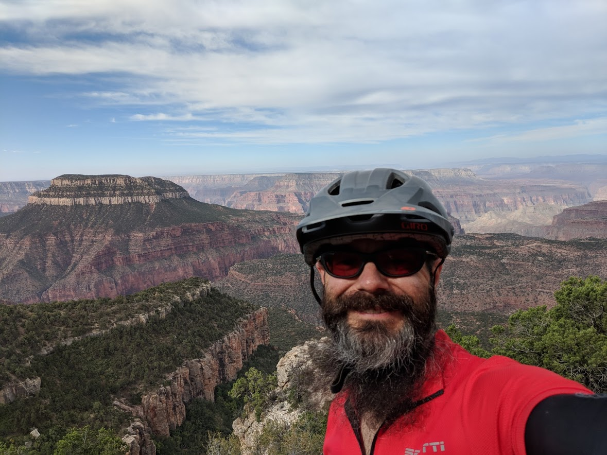

What brings me to this point? This site will allow me
to explore my "why" -- the source of my motivation, curiousity, and purpose.
Meet Mr. Unpredictable

My husband, Dan, was an incredible computer science genius.
He loved computers and technology, especially data science. He once
told me jokingly that I could call him Mr. Unpredictable because he always
learning new things and going on adventures. The one thing
we never would have predicted was his brain tumor and his unexpected death
shortly after surgery earlier this year.
Computer Geeks Unite
I've always been interested in science, in many aspects, such as molecular
biology, chemistry, and computer programming. I met Dan while we both
attended the Advanced High School Studies Program at Brigham Young
University, during the summer before our senior year of High School.
It was an intense 2-week program, learning Prolog. We both graduated with
honors and planned to write each other.
We both attended BYU for our undergraduate degrees. I majored in
microbiology. I worked at a lab following graduation, and later
enjoyed many opportunities to volunteer in our community. I started
studying computer programming on my own, by taking courses through
Coursera, Udacity, etc. Dan always encouraged me to learn and to push
myself. He even had me use Linux instead of Windows, as a growing
experience.
I always will admire Dan's work ethic, his drive to continually improve
his skills and his knowledge. While he was alive, he was a great source of
help, encouragement, and advice. Now that he's gone, I'm more on my own
to figure things out. How should I back up my data? What's the best
way to write a recursive function? Before, I could ask him. Now I'm
learning to be more independent and find out things more on my own.
I hope that I can honor his memory. I dedicate myself to carry on with
the pursuit of learning to strive to become the type of computer
programmer that he was, and to help others with my
skills and knowledge.
My Future
What does my future look like? Nine months of intense web development
learning and project creation, hopefully followed by the opportunity to put what I've learned
to work at a company in a web dev position that will be challenging
and rewarding. With my microbiology background, I would love to work
at a biotech company, but my interests also include education, family
history, and other sciences.
I hope to be an example of hard work and determination for my children,
other family and peers. I look forward to the relationships I will make
with others who are also striving to learn new things everyday and make the
world a better place.